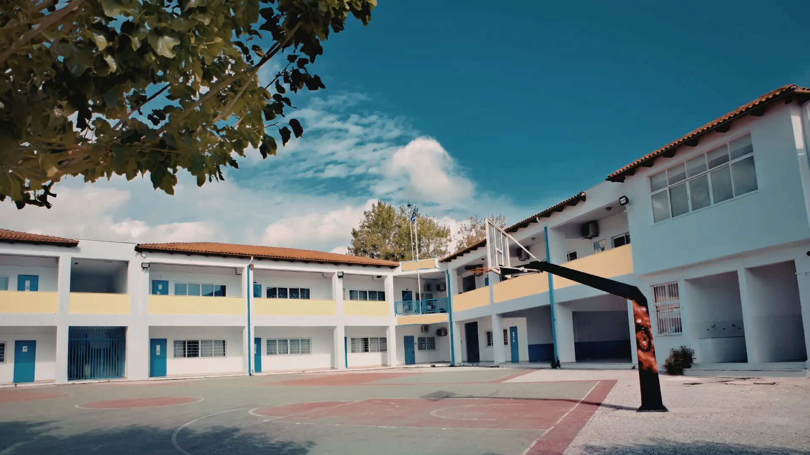
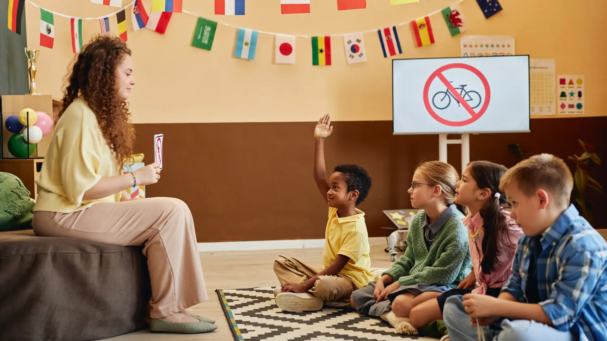
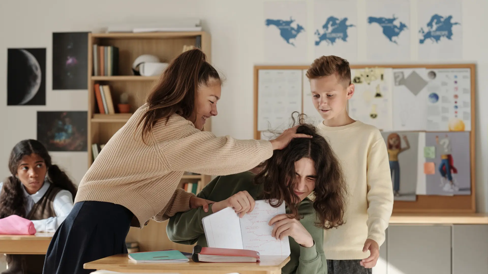
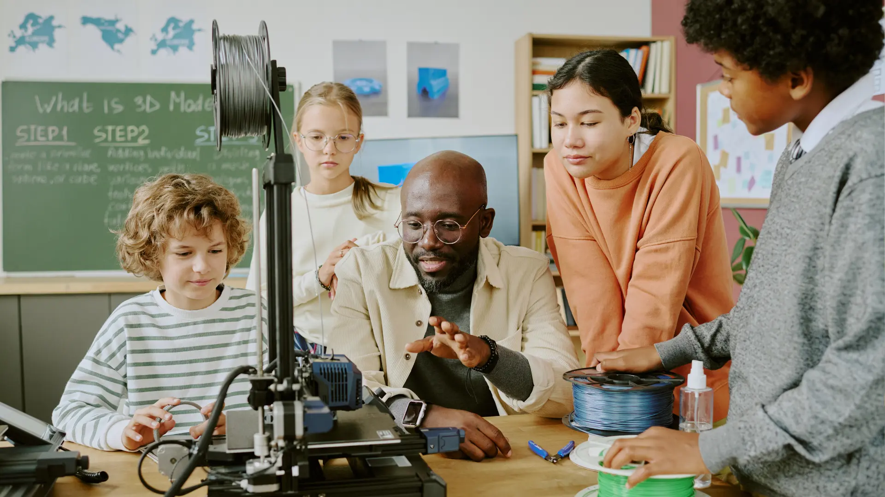

Selamat Datang, Responden
Pilih kategori untuk memberikan rating dan aspirasi Anda.

Fasilitas dan Sarana Prasarana
Ruang kelas, toilet, lapangan, dan sebagainya

Kebijakan Sekolah
Sistem tata tetib, absensi, sanksi, dan sebagainya
Akademik
Metode pembelajaran, tugas, sistem penilaian, dan sebagainya
Lingkungan Sekolah dan Kebersihan
Lingkungan kantin, kebersihan area sekolah, keindahan, dan sebagainya
Hubungan Sosial dan Relasi
Lingkungan pertemanan, interaksi, hubungan, dan sebagainya

Keamanan dan Keselmatan
Sistem penjagaan, pencegahan konflik, keamanan area sekolah, dan sebagainya

Aktivitas Siswa dan Pengembangan Diri
Ekstrakurikuler, acara sekolah, dan sebagainya